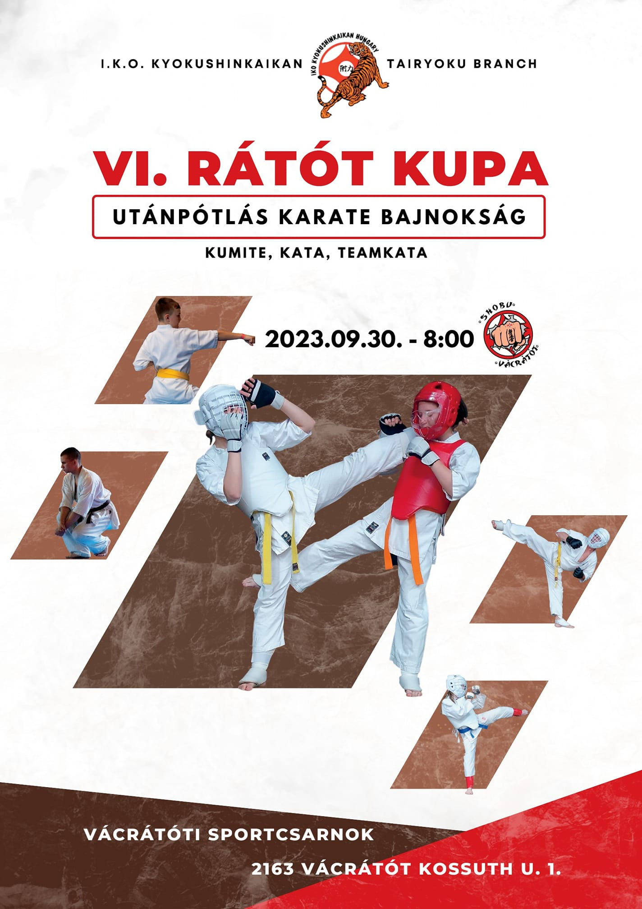
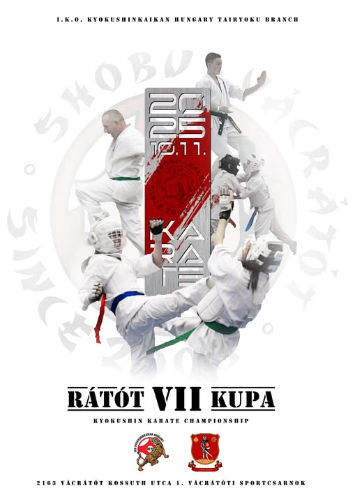

SHOBU HSE
Versenyrendszer
Archív és Aktív versenyek

VI. Rátót Kupa, 2026.09.30, Vácrátót
Nevezés nyitva
2026-03-01 - 2026-05-01
Közönség panel
Szervezői infók

VII. Rátót Kupa, 2027.10.11, Vácrátót
Nevezés lezárult
2026-01-12 - 2026-01-15
Közönség panel
Eredmények
Bejelentkezés
Felhasználónév (Login)
Jelszó (Password)
Belépés a rendszerbe
Nincs még fiókod? Kérjük
Regisztrálj
Elfelejtetted a jelszavad?
TESZT ADATOK:
Admin:
KoloMarki
/ 1234
Bíró:
A tatami
/ A-tatami
Edző:
Balint.Tornai
/ 1234